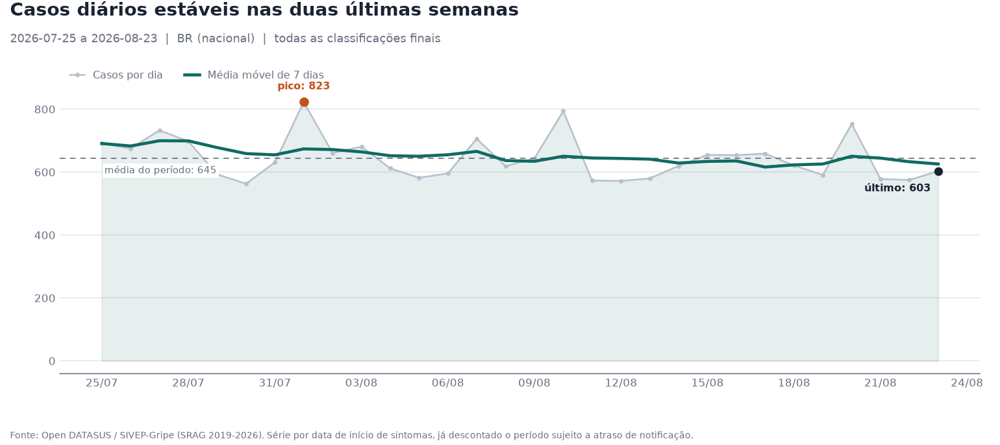
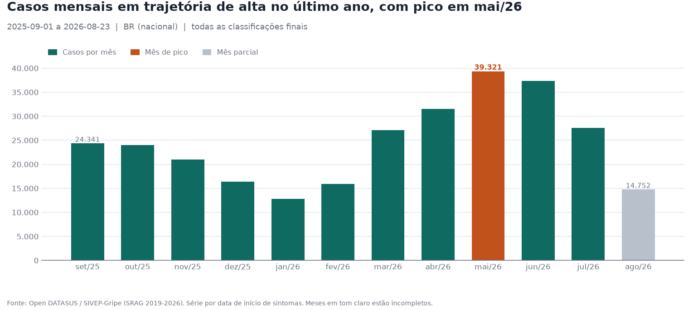

Síndrome Respiratória Aguda Grave - SRAG - Prefeitura
Ler notícia ↗Certificação AI Engineering - Vinícius Barbaresco
SRAG Intelligence Report · Open DATASUS / SIVEP-Gripe (SRAG 2019-2026)
Resumo executivo
Nenhuma regra de alerta disparada; indicadores dentro dos limiares configurados.
Sem variação frente à execução anterior do mesmo recorte.
Comparação
Clique num cabeçalho para ordenar; clique numa linha para abrir a definição, o período, a fonte e as limitações declaradas daquele indicador. As barras comparam contagens de registros entre as linhas — a coluna Valor não tem barra porque mistura porcentagem e taxa por 100 mil habitantes.
| Taxa de aumento de casosexigido | -33,22% | -9.619 | 28.955 | 48.291 | calculado |
Definição Variacao percentual do numero de casos de SRAG entre duas janelas consecutivas de mesmo tamanho, medidas pela data dos primeiros sintomas: (casos_periodo_atual - casos_periodo_anterior) / casos_periodo_anterior x 100. Período 2026-06-25 a 2026-08-23 — janela atual 2026-07-25 a 2026-08-23 comparada a 2026-06-25 a 2026-07-24 Fonte Open DATASUS / SIVEP-Gripe (SRAG 2019-2026) Leitura Variação frente à janela anterior de mesmo tamanho. Limitações declaradas
| |||||
| Letalidade (casos encerrados)exigido | 5,33% | 715 | 13.404 | 19.336 | calculado |
Definição Proporcao de obitos por SRAG entre os casos encerrados elegiveis: obitos (EVOLUCAO = 2) / casos encerrados (EVOLUCAO em 1, 2 ou 3) x 100. Período 2026-07-25 a 2026-08-23 — ultimos 30 dias ate a data de corte analitica Fonte Open DATASUS / SIVEP-Gripe (SRAG 2019-2026) Leitura Letalidade entre casos encerrados (óbito ou cura já definidos). Limitações declaradas
| |||||
| Indicador de UTIexigido | 28,64% | 4.912 | 17.151 | 19.045 | calculado |
Definição Proporcao de pacientes internados por SRAG que foram admitidos em UTI: UTI = 1 / (UTI em 1 ou 2), restrito a internados. Um caso e considerado internado quando HOSPITAL = 1 **ou** quando ha admissao em UTI declarada (UTI = 1). Período 2026-07-25 a 2026-08-23 — ultimos 30 dias ate a data de corte analitica Fonte Open DATASUS / SIVEP-Gripe (SRAG 2019-2026) Leitura Admissão em UTI entre hospitalizados — mede severidade, não ocupação. A ocupação de leitos é o indicador 3b, com denominador do CNES. Limitações declaradas
| |||||
| Indicador de vacinaçãoexigido | 39,93% | 7.636 | 19.124 | 19.336 | calculado |
Definição Proporcao de casos notificados de SRAG com vacinacao declarada: VACINA_COV = 1 / (VACINA_COV em 1 ou 2) para covid-19, e VACINA = 1 / (VACINA em 1 ou 2) para influenza. Período 2026-07-25 a 2026-08-23 — ultimos 30 dias ate a data de corte analitica Fonte Open DATASUS / SIVEP-Gripe (SRAG 2019-2026) Leitura Cobertura declarada entre casos notificados — não é cobertura da população. Limitações declaradas
| |||||
| Ocupação de leitos de UTIcomplementar | 7,7% | 3.988 | 51.774 | 111.298 | calculado |
Definição Proporcao da capacidade instalada de UTI ocupada por pacientes de SRAG em um dia: pacientes_srag_em_uti_no_dia / leitos_uti_disponiveis_no_dia x 100. O numerador vem do censo diario calculado sobre o SIVEP-Gripe; o denominador vem da capacidade instalada publicada pelo CNES para a UF e a competencia compativel com a janela analisada. Período 2026-06-24 a 2026-07-23 — 30 dias encerrados 31 dias antes da data de corte analitica, para que as saidas de UTI ja estejam digitadas Fonte Open DATASUS / SIVEP-Gripe (SRAG 2019-2026) (pacientes) e CNES / Dados Abertos do SUS (leitos) Leitura PISO da ocupação real: mede só pacientes de SRAG sobre a capacidade do CNES, em janela deslocada para trás (não coincide com a dos demais indicadores). Valor baixo NÃO indica rede com folga. Limitações declaradas
| |||||
| Excesso sobre o padrão sazonalcomplementar | -12,08% | -2.657 | 21.993 | 88.774 | calculado |
Definição Variacao percentual dos casos da janela atual em relacao a MEDIANA dos casos observados na mesma janela de calendario nos anos de baseline: (casos_atuais - mediana_baseline) / mediana_baseline x 100. Período 2026-07-25 a 2026-08-23 — janela atual de 30 dias comparada a mesma janela de calendario em 3 ano(s) de baseline Fonte Open DATASUS / SIVEP-Gripe (SRAG 2019-2026) Leitura Janela atual contra a mediana da mesma época nos anos de referência. Limitações declaradas
| |||||
| Incidência por 100 mil hab.complementar | 9,03por 100 mil hab. no periodo | 19.336 | 214.211.951 | 19.336 | calculado |
Definição Casos de SRAG com primeiros sintomas na janela analisada, por 100 mil habitantes: casos / populacao residente estimada (IBGE) x 100.000. Período 2026-07-25 a 2026-08-23 — ultimos 30 dias ate a data de corte analitica Fonte Open DATASUS / SIVEP-Gripe (SRAG 2019-2026) (casos) e IBGE (populacao) Leitura Casos notificados sobre a população residente (IBGE), no período. Limitações declaradas
| |||||
Evolução recente — últimos 30 dias

Principais leituras
Visão estrutural — últimos 12 meses

Principais leituras
Contexto externo
Evidência contextual (notícias) — nunca altera, corrige ou substitui os indicadores calculados sobre os dados oficiais do DATASUS (evidência epidemiológica).
Síndrome Respiratória Aguda Grave - SRAG - Prefeitura
Ler notícia ↗InfoGripe: cinco estados têm incidência de SRAG em nível de alerta e tendência de aumento - Fundação Oswaldo Cruz (Fiocruz)
Ler notícia ↗InfoGripe: maior parte do país tem tendência de queda ou estabilização de casos de SRAG - Fundação Oswaldo Cruz (Fiocruz)
Ler notícia ↗InfoGripe: número de casos de SRAG mantém tendência de queda em grande parte do país - Fundação Oswaldo Cruz (Fiocruz)
Ler notícia ↗Leitos extras de UTI para síndrome respiratória grave serão fechados após queda nos casos em Três Corações, MG - G1
Ler notícia ↗Interpretação
Texto produzido por
deterministic-template exclusivamente a
partir dos resultados das tools acima, validado pelo guardrail de evidência.
A comparacao entre janelas consecutivas de 30 dias indica reducao de 33.22% no numero de casos de SRAG: 19336 casos na janela atual contra 28955 na anterior. No acumulado dos ultimos 12 meses foram 292087 casos notificados.
Isso corresponde a 9.03 casos notificados por 100 mil habitantes (populacao IBGE de 2026). Frente ao baseline sazonal, a janela esta 12.08% abaixo da mediana da mesma epoca em 3 anos de referencia (21993 casos), o que e compativel com a sazonalidade esperada.
A letalidade entre casos encerrados foi de 5.33%: 715 obitos por SRAG em 13404 casos encerrados. Havia ainda 5437 casos sem encerramento no periodo, o que torna o indicador instavel na janela mais recente.
Entre os hospitalizados por SRAG, 28.64% foram internados em UTI (4912 de 17151 com a informacao preenchida). O censo diario de pacientes de SRAG em UTI atingiu pico de 0 pacientes no periodo. Este indicador mede admissao em UTI -- severidade dos casos notificados --, e nao ocupacao de leitos, que e publicada a parte.
Pacientes de SRAG ocupavam 7.7% da capacidade instalada de UTI no dia de maior censo da janela apurada (3988 pacientes sobre 51774 leitos de UTI adulto e pediatrica, competencia 2026-07 do CNES); a media da janela foi de 7.17%. O valor e um piso da ocupacao total, porque os mesmos leitos atendem pacientes sem SRAG, e um percentual baixo nao indica rede com folga. A janela vai de 2026-06-24 a 2026-07-23 e nao coincide com a dos demais indicadores.
Entre os casos notificados com a informacao preenchida, 39.93% declararam vacinacao contra covid-19 (completude de 98.9%) e 35.48% contra influenza (completude de 94.64%). Trata-se de cobertura entre pessoas que adoeceram e foram notificadas, nao da cobertura vacinal da populacao.
Foram recuperadas 8 noticias de fontes confiaveis no periodo. Entre elas: "Síndrome Respiratória Aguda Grave - SRAG - Prefeitura" (Prefeitura, 2026-08-14); "InfoGripe: cinco estados têm incidência de SRAG em nível de alerta e tendência de aumento - Fundação Oswaldo Cruz (Fiocruz)" (Fundação Oswaldo Cruz (Fiocruz), 2026-09-10); "InfoGripe: maior parte do país tem tendência de queda ou estabilização de casos de SRAG - Fundação Oswaldo Cruz (Fiocruz)" (Fundação Oswaldo Cruz (Fiocruz), 2026-08-13). Esse material e contexto externo e nao altera nenhum dos indicadores calculados sobre os dados do DATASUS.
Este relatório apresenta análise epidemiológica agregada de dados públicos de vigilância. Não constitui diagnóstico, prescrição, recomendação terapêutica nem orientação de conduta clínica individual.
Transparência
ℹ Nota metodológica — UTI
Este indicador representa admissão em UTI entre pacientes de SRAG hospitalizados. A ocupação de leitos de UTI por pacientes de SRAG É calculada nesta execução (ver seção 3b/indicador de contexto), com denominador do CNES -- nunca a partir deste indicador de admissão.
ℹ Nota metodológica — Vacinação
Este indicador representa cobertura vacinal declarada entre casos notificados de SRAG, não a cobertura vacinal da população. A referencia de doses aplicadas para esta campanha nao declara cobertura de periodo completo (`periodo_completo=true`); os registros disponiveis somam 427874 doses, mas podem ser um extrato mensal isolado do SI-PNI. Um recorte parcial dividido pela populacao do ano nao e cobertura vacinal anual nem populacional -- e um numero sem significado epidemiologico. Agregue todos os extratos mensais da campanha com `python -m src.data.reference.vaccination --from-pni ... --periodo-completo` para habilitar este indicador.
| Fonte dos dados | Open DATASUS / SIVEP-Gripe (SRAG 2019-2026) |
| Dataset | https://dadosabertos.saude.gov.br/dataset/srag-2019-a-2026 |
| Registros processados na carga | 1.705.626 |
| Registros descartados | 0 (nada é removido silenciosamente) |
| Via de interpretação | deterministic-template |
Definição completa de cada indicador (numerador, denominador, campos, tratamento de ausência e limitações), o contrato de colunas e o relatório de qualidade da carga estão no anexo técnico, abaixo.
Certificação AI Engineering - Vinícius Barbaresco
ec99751b-dddd-4d3f-92e4-61607179b636deterministic-templateEste relatório apresenta análise epidemiológica agregada de dados públicos de vigilância. Não constitui diagnóstico, prescrição, recomendação terapêutica nem orientação de conduta clínica individual.
| # | Indicador | Valor | Numerador | Denominador | Status |
|---|---|---|---|---|---|
| 1 | case_growth_rate | -33.22% | -9619 | 28955 | calculado |
| 2 | mortality_rate | 5.33% | 715 | 13404 | calculado |
| 3 | icu_admission_rate | 28.64% | 4912 | 17151 | calculado |
| 4 | icu_bed_occupancy_rate [*] | 7.7% | 3988 | 51774 | calculado |
| 5 | vaccination_coverage_among_cases | 39.93% | 7636 | 19124 | calculado |
| 6 | incidence_rate | 9.03 por 100 mil hab. no periodo | 19336 | 214211951 | calculado |
| 7 | seasonal_excess | -12.08% | -2657 | 21993 | calculado |
[*] mede so a parcela ocupada por pacientes de SRAG (piso da ocupacao real, nao a ocupacao total) e cobre uma janela deslocada para tras em relacao aos demais indicadores -- ver secao 3b para o periodo exato.
Nivel consolidado: NORMAL. Nenhuma regra de alerta disparada; indicadores dentro dos limiares configurados.
| Regra | Indicador | Observado | Limiar | Disparada |
|---|---|---|---|---|
| crescimento_de_casos | case_growth_rate | -33.22% | 20.0% | nao |
| letalidade | mortality_rate | 5.33% | 10.0% | nao |
| excesso_sazonal | seasonal_excess | -12.08% | 50.0% | nao |
760c2840-56dd-4c2b-a316-7dc79632721a (gerada em 2026-09-18T02:37:42, corte 2026-08-23; corte atual 2026-08-23)| Indicador | Anterior | Atual | Variacao |
|---|---|---|---|
| case_growth_rate | -33.22 | -33.22 | 0.0 |
| mortality_rate | 5.33 | 5.33 | 0.0 |
| icu_admission_rate | 28.64 | 28.64 | 0.0 |
| vaccination_coverage_among_cases | 39.93 | 39.93 | 0.0 |
| incidence_rate | 9.03 | 9.03 | 0.0 |
| seasonal_excess | -12.08 | -12.08 | 0.0 |
As duas execucoes usam a mesma data de corte analitica: a variacao reflete atualizacao da base pela fonte, nao passagem do tempo.
Valor: -33.22%
Valor: 5.33%
coorte_madura a mesma taxa sobre uma janela deslocada o tempo tipico ate o encerramento (percentil 90 medido na propria base), com o percentual encerrado das duas. Na base de referencia a janela recente marca 7,86% com 68,8% encerrado, contra 6,04% com 85,5% na coorte madura -- a diferenca e maturacao, nao gravidade.Valor: 28.64%
Qualidade da permanencia em UTI usada no censo (estadias em UTI que intersectam a janela do censo):
Este indicador nao e ocupacao de leitos. Indicador distinto, calculado a parte com a capacidade instalada do CNES. A taxa de admissao acima NAO e ocupacao: ela mede severidade dos casos notificados, nao pressao sobre a capacidade instalada. A ocupacao e publicada em separado como icu_bed_occupancy_rate.
Valor: 7.7%
pacientes_srag_em_uti_no_dia / leitos_uti_disponiveis_no_dia * 100Alcance: parcela da capacidade de UTI ocupada por pacientes de SRAG notificados; e um piso da ocupacao total, que inclui pacientes sem SRAG. Um valor baixo nao significa rede com folga.
Periodo distinto. este periodo NAO coincide com o dos demais indicadores, que vao ate 2026-08-23. Comparar a ocupacao com eles exige levar o deslocamento em conta
Valor: 39.93%
Taxa de vacinacao da populacao (referencia externa, ano 2026):
periodo_completo=true); os registros disponiveis somam 427874 doses, mas podem ser um extrato mensal isolado do SI-PNI. Um recorte parcial dividido pela populacao do ano nao e cobertura vacinal anual nem populacional -- e um numero sem significado epidemiologico. Agregue todos os extratos mensais da campanha com python -m src.data.reference.vaccination --from-pni ... --periodo-completo para habilitar este indicador.periodo_completo=true); os registros disponiveis somam 403884 doses, mas podem ser um extrato mensal isolado do SI-PNI. Um recorte parcial dividido pela populacao do ano nao e cobertura vacinal anual nem populacional -- e um numero sem significado epidemiologico. Agregue todos os extratos mensais da campanha com python -m src.data.reference.vaccination --from-pni ... --periodo-completo para habilitar este indicador.population_vaccination_coverage), com numerador do SI-PNI e denominador demografico. Esta metrica nunca deve ser lida no lugar dela, nem usada como aproximacao dela.Valor: 9.03 por 100 mil hab. no periodo
Valor: -12.08%
| Ano | Janela comparada | Casos |
|---|---|---|
| 2022 | 2022-07-25 a 2022-08-23 | 28680 |
| 2023 | 2023-07-25 a 2023-08-23 | 18765 |
| 2024 | 2024-07-25 a 2024-08-23 | 21993 |
| Mes | Casos | Observacao |
|---|---|---|
| 2025-09 | 24341 | |
| 2025-10 | 24030 | |
| 2025-11 | 21011 | |
| 2025-12 | 16349 | |
| 2026-01 | 12824 | |
| 2026-02 | 15912 | |
| 2026-03 | 27092 | |
| 2026-04 | 31530 | |
| 2026-05 | 39321 | |
| 2026-06 | 37384 | |
| 2026-07 | 27541 | |
| 2026-08 | 14752 | mes parcial |
Arquivo:
Arquivo:
| Data | Valor | O que e |
|---|---|---|
| Data atual do sistema | 2026-09-18 | dia em que o relatorio foi executado. NAO e a data ate a qual ha dado disponivel. |
| Sintomas mais recentes na base | 2026-09-13 | ha fichas com sintomas depois da data de corte; elas existem, mas a janela nao as usa porque a digitacao delas ainda esta incompleta |
| Digitacao mais recente na base | 2026-09-13 | ultima ficha digitada presente no arquivo publicado pelo DATASUS; e a ancora de todas as janelas, no lugar de hoje |
| Corte epidemiologico | 2026-08-23 | ultimo dia considerado confiavel: a data de digitacao menos o atraso de notificacao configurado. Todo indicador termina aqui |
REPORTING_LAG_DAYS)A data de execucao nao e a data ate a qual ha dado. O DATASUS publica com defasagem, e o sistema ainda desconta o atraso de notificacao para nao ler digitacao pendente como queda de casos.
ajustes_aplicados, que descreve o tratamento e nao o conteudo| Indicador | Publicado | Se deduplicado | Diferenca |
|---|---|---|---|
| letalidade entre casos encerrados | 5.33% | 5.34% | 0.01 p.p. |
| taxa de admissao em UTI entre internados | 28.64% | 28.65% | 0.01 p.p. |
| cobertura vacinal declarada (covid-19) entre casos | 39.93% | 39.97% | 0.04 p.p. |
Veredito: Nenhum indicador se desloca mais que 0.5 ponto percentual quando as linhas identicas sao colapsadas: a duplicidade nao e fonte relevante de erro nesta janela, diante das incertezas ja declaradas.
Decisao de tratamento. A contagem principal NAO e deduplicada. Sem o identificador da notificacao -- negado por minimizacao -- nao ha como distinguir duplicata real de dois pacientes distintos com os mesmos atributos agregados, e os erros nao sao simetricos: deduplicar remove casos reais de forma irreversivel, enquanto nao deduplicar mantem um excedente pequeno e mensuravel, quantificado aqui.
Pseudonimizacao. Pseudonimizacao irreversivel do identificador da notificacao foi avaliada e RECUSADA: o pseudonimo continua sendo dado pessoal (identificador direto e estavel de uma notificacao), reverter um hash sobre um espaco pequeno e viavel, e o ganho seria desproporcional -- a fonte tem zero NU_NOTIFIC repetido e zero linhas identicas nas 194 colunas brutas.
5303787c-c8c3-46f7-bcbf-20925d056f98| Ano | Arquivo | sha256 | Origem |
|---|---|---|---|
| 2019 | INFLUD19-23-03-2026.csv | f6de547c1234e2de... | download do Open DATASUS |
| 2022 | INFLUD22-23-03-2026.csv | 57250ce92b916b4f... | download do Open DATASUS |
| 2023 | INFLUD23-23-03-2026.csv | 639b748fb2838336... | download do Open DATASUS |
| 2024 | INFLUD24-23-03-2026.csv | b516f6eae61203da... | download do Open DATASUS |
| 2025 | INFLUD25-14-09-2026.csv | a507a213d043d5aa... | download do Open DATASUS |
| 2026 | INFLUD26-14-09-2026.csv | 333afa53758437ed... | download do Open DATASUS |
Toda alteracao e registrada no proprio registro, na coluna ajustes_aplicados. Os registros afetados podem ser localizados individualmente: SELECT * FROM srag_cases WHERE ajustes_aplicados <> ''.
| Codigo | Registros | Significado |
|---|---|---|
idade_anulada | 7 | idade normalizada fora do intervalo plausivel [0, 120] anos; substituida por nulo |
idade_unidade_implausivel | 38 | NU_IDADE_N fora do dominio aceito para a unidade em TP_IDADE (1-dia admite 0 a 30; 2-mes admite 0 a 11); a idade derivada foi anulada. A unidade NAO e reinterpretada: nao ha como saber se o erro esta no numero ou na unidade, e escolher um dos dois seria inventar dado. O piso zero para meses diverge do dicionario, que declara 1 a 11: ver AGE_UNIT_DOMAIN. Foram medidos 5 registros na safra de referencia (-9, -1, 13, 37 e 63 meses) |
Marcadas por dimensao, nao como um unico veredito. Apenas a flag do eixo temporal exclui o registro da camada analitica; as demais sao respeitadas somente pelas metricas que dependem daquela dimensao.
| Flag | Registros | % | Exclui da analise | Significado |
|---|---|---|---|---|
flag_data_invalida | 573 | 0.034% | sim | eixo temporal primario inutilizavel: DT_SIN_PRI ausente, anterior ao inicio da serie ou posterior a data de digitacao. Unica flag que exclui o registro da view analitica, porque sem ela nenhuma metrica pode situar o caso no tempo. |
flag_internacao_inconsistente | 23482 | 1.377% | nao | DT_INTERNA anterior aos primeiros sintomas, ou HOSPITAL=1 sem data de internacao. Afeta apenas indicadores que dependem da internacao. |
flag_uti_inconsistente | 15233 | 0.893% | nao | DT_ENTUTI anterior aos primeiros sintomas, DT_SAIDUTI anterior a DT_ENTUTI, ou UTI=1 sem data de entrada. Afeta o censo de UTI, que depende da permanencia. |
flag_evolucao_inconsistente | 91081 | 5.34% | nao | DT_EVOLUCA anterior aos primeiros sintomas, ou caso encerrado (EVOLUCAO em 1,2,3) sem data de evolucao. Nao afeta a taxa de mortalidade, que usa o codigo e nao a data, mas afeta a imputacao de permanencia em UTI. |
flag_data_implausivel | 7724 | 0.453% | nao | alguma coluna de data traz um valor fora do intervalo fisicamente possivel -- anterior ao inicio da serie SIVEP-Gripe ou posterior a data de execucao da carga. Captura erros de digitacao de ano (1695, 2202, 5202, 8202 foram medidos na fonte) que nenhuma comparacao entre datas detecta, porque a ordem relativa continua correta. Nao exclui o registro: marca e conta. |
Preservado como esta e excluido de numeradores e denominadores; nunca convertido em Nao nem em zero.
| Campo | Registros com codigo 9 |
|---|---|
HOSPITAL | 2762 |
UTI | 19461 |
EVOLUCAO | 36181 |
VACINA | 289365 |
VACINA_COV | 31606 |
deterministico (planejador: deterministic-template)Nenhuma analise adicional foi acionada: a solicitacao ja estava inteiramente atendida pelos indicadores do contrato.
A via de interpretacao em uso nao faz tool calling; apenas o contrato obrigatorio foi executado.
Texto produzido por deterministic-template a partir exclusivamente dos resultados das tools, validado pelo guardrail de evidencia.
A comparacao entre janelas consecutivas de 30 dias indica reducao de 33.22% no numero de casos de SRAG: 19336 casos na janela atual contra 28955 na anterior. No acumulado dos ultimos 12 meses foram 292087 casos notificados.
Isso corresponde a 9.03 casos notificados por 100 mil habitantes (populacao IBGE de 2026). Frente ao baseline sazonal, a janela esta 12.08% abaixo da mediana da mesma epoca em 3 anos de referencia (21993 casos), o que e compativel com a sazonalidade esperada.
A letalidade entre casos encerrados foi de 5.33%: 715 obitos por SRAG em 13404 casos encerrados. Havia ainda 5437 casos sem encerramento no periodo, o que torna o indicador instavel na janela mais recente.
Entre os hospitalizados por SRAG, 28.64% foram internados em UTI (4912 de 17151 com a informacao preenchida). O censo diario de pacientes de SRAG em UTI atingiu pico de 0 pacientes no periodo. Este indicador mede admissao em UTI -- severidade dos casos notificados --, e nao ocupacao de leitos, que e publicada a parte.
Pacientes de SRAG ocupavam 7.7% da capacidade instalada de UTI no dia de maior censo da janela apurada (3988 pacientes sobre 51774 leitos de UTI adulto e pediatrica, competencia 2026-07 do CNES); a media da janela foi de 7.17%. O valor e um piso da ocupacao total, porque os mesmos leitos atendem pacientes sem SRAG, e um percentual baixo nao indica rede com folga. A janela vai de 2026-06-24 a 2026-07-23 e nao coincide com a dos demais indicadores.
Entre os casos notificados com a informacao preenchida, 39.93% declararam vacinacao contra covid-19 (completude de 98.9%) e 35.48% contra influenza (completude de 94.64%). Trata-se de cobertura entre pessoas que adoeceram e foram notificadas, nao da cobertura vacinal da populacao.
Foram recuperadas 8 noticias de fontes confiaveis no periodo. Entre elas: "Síndrome Respiratória Aguda Grave - SRAG - Prefeitura" (Prefeitura, 2026-08-14); "InfoGripe: cinco estados têm incidência de SRAG em nível de alerta e tendência de aumento - Fundação Oswaldo Cruz (Fiocruz)" (Fundação Oswaldo Cruz (Fiocruz), 2026-09-10); "InfoGripe: maior parte do país tem tendência de queda ou estabilização de casos de SRAG - Fundação Oswaldo Cruz (Fiocruz)" (Fundação Oswaldo Cruz (Fiocruz), 2026-08-13). Esse material e contexto externo e nao altera nenhum dos indicadores calculados sobre os dados do DATASUS.
Este relatório apresenta análise epidemiológica agregada de dados públicos de vigilância. Não constitui diagnóstico, prescrição, recomendação terapêutica nem orientação de conduta clínica individual.
Noticias complementam a leitura do cenario. Elas nao alteram, corrigem nem substituem os indicadores calculados sobre os dados do DATASUS. Janela configurada: ate 45 dias antes da execucao.
| Publicada em | Fonte | Titulo | URL | Recuperada em |
|---|---|---|---|---|
| 2026-08-14 | Prefeitura | Síndrome Respiratória Aguda Grave - SRAG - Prefeitura | link | 2026-09-18T01:33:16.250314+00:00 |
| 2026-09-10 | Fundação Oswaldo Cruz (Fiocruz) | InfoGripe: cinco estados têm incidência de SRAG em nível de alerta e tendência de aumento - Fundação Oswaldo Cruz (Fiocruz) | link | 2026-09-18T01:33:16.250314+00:00 |
| 2026-08-13 | Fundação Oswaldo Cruz (Fiocruz) | InfoGripe: maior parte do país tem tendência de queda ou estabilização de casos de SRAG - Fundação Oswaldo Cruz (Fiocruz) | link | 2026-09-18T01:33:16.250314+00:00 |
| 2026-08-06 | Fundação Oswaldo Cruz (Fiocruz) | InfoGripe: número de casos de SRAG mantém tendência de queda em grande parte do país - Fundação Oswaldo Cruz (Fiocruz) | link | 2026-09-18T01:33:16.250314+00:00 |
| 2026-08-29 | G1 | Leitos extras de UTI para síndrome respiratória grave serão fechados após queda nos casos em Três Corações, MG - G1 | link | 2026-09-18T01:33:16.250314+00:00 |
| 2026-08-14 | Prefeitura | Influenza A H3 Sazonal - Prefeitura | link | 2026-09-18T01:33:16.250314+00:00 |
| 2026-08-14 | Prefeitura | Influenza B - Prefeitura | link | 2026-09-18T01:33:16.250314+00:00 |
| 2026-09-15 | Metrópoles | Escudo materno: a vacina que afasta bebês da UTI com anticorpos da mãe - Metrópoles | link | 2026-09-18T01:33:16.250314+00:00 |
Noticia mais recente: 2026-09-15; mais antiga dentro da janela: 2026-08-06.
Acervo consultado: 141 noticias no Vector DB (backend de embedding: openai:text-embedding-3-small); ultima ingestao em 2026-09-18T01:33:16.250314.
ec99751b-dddd-4d3f-92e4-61607179b636\outputs\audit\ec99751b-dddd-4d3f-92e4-61607179b636.jsonl Consulta por SQL, sobre todas as execucoes: SELECT * FROM audit_events WHERE run_id = '<run_id>' ORDER BY seq; no banco analitico. Ou, no terminal: python main.py --audit ec99751b-dddd-4d3f-92e4-61607179b636.
deterministic-templateVersao dos dados e proveniencia
5303787c-c8c3-46f7-bcbf-20925d056f98INFLUD19-23-03-2026.csv (sha256 f6de547c1234e2de..., download do Open DATASUS)INFLUD22-23-03-2026.csv (sha256 57250ce92b916b4f..., download do Open DATASUS)INFLUD23-23-03-2026.csv (sha256 639b748fb2838336..., download do Open DATASUS)INFLUD24-23-03-2026.csv (sha256 b516f6eae61203da..., download do Open DATASUS)INFLUD25-14-09-2026.csv (sha256 a507a213d043d5aa..., download do Open DATASUS)INFLUD26-14-09-2026.csv (sha256 333afa53758437ed..., download do Open DATASUS)Referencias externas usadas
| Referencia | Disponivel | Obtida em | sha256 | Linhas |
|---|---|---|---|---|
| Populacao residente (IBGE) | sim | 2026-09-14T04:15:04 | 8ab1e5d02523cfc8... | 81 |
| Doses aplicadas (SI-PNI) | sim | 2026-09-17T23:30:04 | 3b2db41f90405358... | 54 |
| Leitos de UTI (CNES) | sim | 2026-09-17T13:55:39 | c7d4b229cd38f7a0... | 854 |
Indicadores indisponiveis e causa
Camada de agente e modelo
deterministico (planejador deterministic-template, 0 aceita(s), 0 recusada(s))deterministic-templateContexto externo e resiliencia
openai:text-embedding-3-small| Politica | Verificada em | Descricao |
|---|---|---|
| Sem diagnóstico ou conduta clínica | validate_request (entrada) e generate_interpretation, passo apply_output_guardrails (saída) | O sistema produz análise epidemiológica agregada. Não emite diagnóstico, prescrição, recomendação terapêutica nem orientação de conduta clínica individual. |
| Proteção de dados pessoais | schema de ingestão, regra de célula pequena nas tools, auditoria, generate_interpretation (varredura da saída) e generate_report (cabeçalho) | Colunas identificáveis nunca são lidas do dataset; toda saída passa por varredura de identificadores (CPF, CNS, e-mail, telefone). O agente consulta apenas agregados por período, UF e classificação; não existe tool para recuperar registros individuais. |
| Toda afirmação quantitativa precisa de evidência | validate_evidence e generate_interpretation, passo apply_output_guardrails | Números presentes na interpretação são confrontados com os valores efetivamente retornados pelas tools. Valor sem lastro bloqueia a publicação do relatório. |
| Sem SQL arbitrário gerado pelo modelo | camada de tools e conexão DuckDB | Não existe tool que execute consulta livre. O modelo escolhe tools e preenche parâmetros tipados, validados contra domínios fechados; o SQL é literal no código e recebe valores por binding. O banco é aberto em modo somente leitura. |
| Notícias não sobrescrevem dados oficiais | estado do grafo e renderização do relatório | Notícias circulam em campo próprio do estado e entram no relatório apenas sob o rótulo CONTEXTO EXTERNO. Nenhum indicador é calculado, ajustado ou corrigido a partir de conteúdo jornalístico. |
| Declarar indisponibilidade em vez de extrapolar | camada de métricas e generate_report | Quando uma métrica não pode ser calculada com segurança, o sistema declara a indisponibilidade e o motivo. Nunca substitui ausência por zero, média ou estimativa. |
| Revisão semântica independente da saída | generate_interpretation, passo apply_output_guardrails, após as verificações lexicais; somente sobre texto produzido por modelo | Depois das verificações lexicais, o texto do modelo é entregue a um revisor independente (outra chamada de modelo, prompt próprio, sem acesso ao pedido original) que procura conduta clínica parafraseada e dado individual -- achados bloqueantes -- e, em caráter consultivo, obediência a instruções vindas de notícias e extrapolação de indicador indisponível, que viram aviso. Indisponibilidade do revisor é declarada no relatório e a camada lexical permanece (fail-open). |
| Instrução do sistema não é reescrita pela solicitação | validate_request (classificação e recusa), select_optional_tools (allowlist e schemas) e generate_interpretation (sanitização do contexto externo) | A solicitação é classificada em risco de prompt injection antes de qualquer consulta. Risco alto -- sobrescrever instruções, assumir outro papel, extrair o prompt ou credenciais, executar SQL ou código, arbitrar o valor de um indicador, suprimir limitações -- é recusado, e o motivo vai para a trilha de auditoria. Risco médio segue com aviso registrado. Conteúdo externo (títulos, fontes, URLs e mensagens de erro) é sanitizado antes de entrar no contexto do modelo, e a solicitação do usuário circula rotulada como dado, nunca como instrução. |
Resultado da validacao de saida: aprovada
Revisao semantica independente: nao aplicavel: texto produzido pela via deterministica, sem modelo.
Nenhuma chamada a modelo nesta execucao (via deterministica).